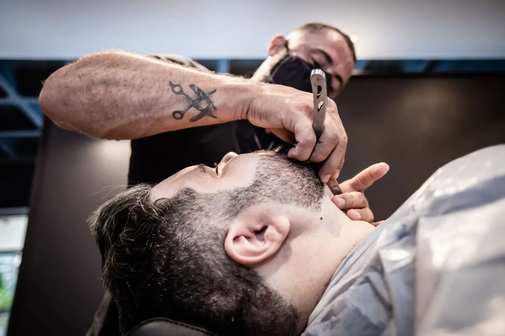
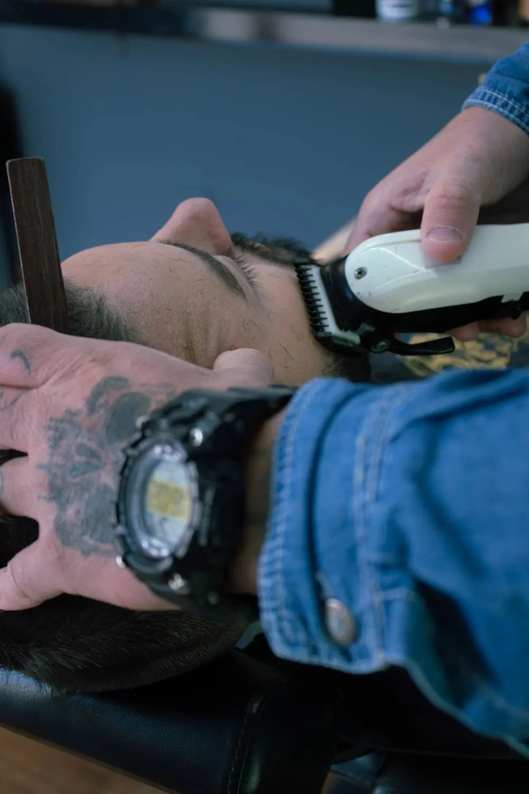

Services
What’s on
the menu
- 01Adult haircut with razor line-up
- 02Haircut & beard trim, razor
- 03Kids’ cuts, ages 2–7
- 04Hair line-up & beard shape-up
- 05Straight razor shave with hot towel
- 06Full spa steamer razor shave
- 07Wave hair style cut
- 08Stress relief cut
- 09Eyebrow trim
Service names as listed on the shop’s Booksy page. See prices and add-ons on Booksy →
Gallery
The
barbershop


Representative stock photos, not Consistent Cutz.
Reviews
Clients
keep coming back
5.0
379 Booksy reviews
379 Booksy reviews
WONDERFUL service. Always on time. BEAUTIFUL cut! I LOVE it!
Lydia · Booksy review, August 2026If you want a great cut, Tino delivers. I love that he helps me achieve my style goals and works with my vision of how I want my hair to look.
Camille · Booksy review, August 2026A great Barber that I’ve been doing since 2006 always consistent with the haircut
Jeffrey · Booksy review, August 2026After moving to the South Bay, we were looking for a new barber, and Tino at Consistent Cutz exceeded our expectations. He was professional, welcoming..., and made us feel comfortable from the start. My son loves his curly burst fade, and Tino gave me a cut that works with the direction of my hair. He also shared some great tips to help promote healthy hair growth. Not many barbers have that level of knowledge and skill. Tino is truly a master barber. We'll definitely be back!
Rich · Booksy review, July 2026The best barber in town definitely knows his clients and their needs!
CJ · Booksy review, July 2026
Swipe for more →
Visit
Find
the shop
Consistent Cutz Barber Shop
1528 Termino AveLong Beach, CA 90804
Appointments only, no walk-ins, per the shop’s Booksy page. Hours: see Booksy.
(562) 595-2123 · Get directions →
Book on BooksyGet on
the schedule
Pick your service and time on Booksy.